I am an Computer Scientist | Senior Game Developer | Game Director |
CTO.
I'm coffee and brew my own computers.
You can call me Ryan or Acala(Stage name).
Click my avatar to view my resume.
Skills
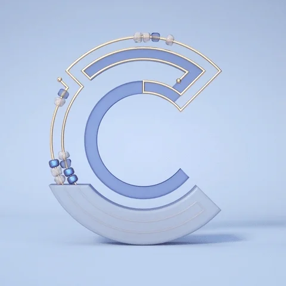
C/C++
C#
JS
Python
Unreal
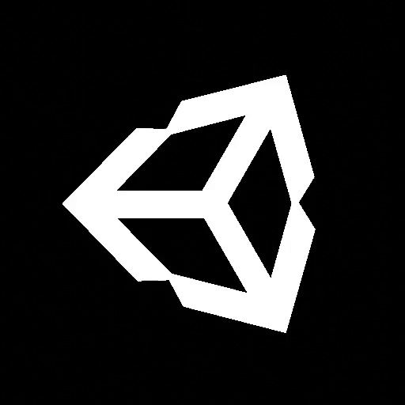
Unity
AWS
NodeJS
SQL
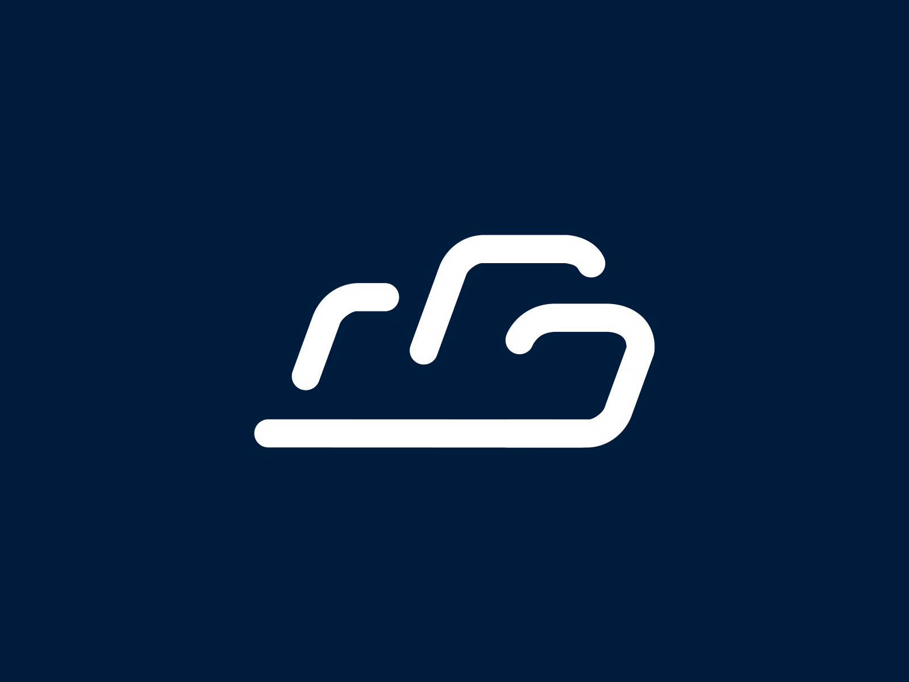
NoSQL
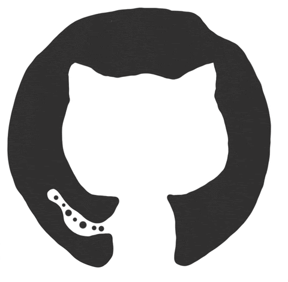
Git
Design
Experience
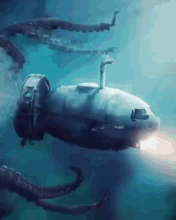
Ocean Abyss
UE5C++BlueprintSinglePlayerCoop
The year is 2077, and the world as we knew it has been drastically changed by a cataclysmic
event. The
polar
ice caps melted, and the sea levels rose, submerging most of the landmasses. The remaining humans have
adapted
to living on floating structures made of scrap and salvaged materials. The oceans are now the only habitable
space left on Earth.
You are a survivor who's stranded on a small, makeshift raft in the middle of the ocean. With limited
resources, you must find a way to stay alive and, hopefully, find a way to reach the rumored land masses
that have been said to still exist.
As you navigate through the treacherous waters, you'll encounter other survivors, both friendly and
hostile. You must be cautious and strategic with your interactions, as not everyone can be trusted.
As you navigate the vast oceans, you soon discover that you are not alone. Deep beneath the waves lurks a
colossal sea monster, larger than anything you've ever seen before. You encounter not just one, but
multiple giant sea monsters that roam the seas. They are said to have been awakened by the cataclysmic
event that changed the world, and they now roam the seas, preying on anything in their path.
You'll need to scavenge for food and resources, as well as craft your own tools and shelter to protect
yourself from the elements and predators. Along the way, you'll encounter various challenges such as
dangerous storms, sea monsters, and rival factions.
Your ultimate goal is to reach one of the rumored land masses, where you hope to find a new home and start
a new life. But the journey will be long and perilous, and the odds of survival are slim.
Can you brave the harsh conditions of the post-apocalyptic world and survive long enough to reach your
destination? Only time will tell.
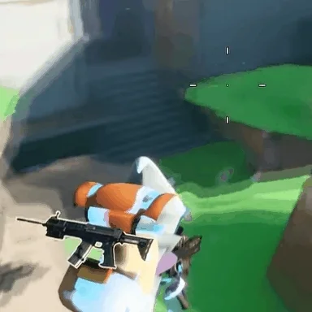
Blaster
UE5C++BlueprintMultiplayerShooter
Blaster is an multiplayer shooter project has the potential to compete with current battle
royale games on
the market. With its engaging gameplay, customizable features, and immersive graphics, it offers a fresh and
exciting experience for players looking for a new multiplayer shooter challenge.
The Blaster project is still developing on Unreal Engine 5 and comes with these features:
- Connecting players across the internet with matchmaking sessions
- Optimize network code by minimizing bandwidth and maximizing performance
- Multiple weapons including pistols, SMGs, assault rifles, shotguns, sniper rifles, rocket launcher,
grenade launchers, and throwing grenades
- Crouching, aiming, jumping, strafing, reloading, and throwing, all in multiplayer
- Subsystem to manage online sessions
- Display announcements including: Who eliminated who, who won the game, winning teams, countdown
timers
- Plugin to convert any Unreal Engine project to multiplayer
- Replication techniques for fast-paced, competitive shooter games
- Lag compensation techniques for multiplayer including client-side prediction and server-side rewind
- Pickups including shields, health, speed buffs, jump buffs, and ammo pickups
- HUD with health and shield bars, ammo count, score and defeats, and game timers
- Custom Match States: Fly around in the warmup stage, display winners in the cooldown stage
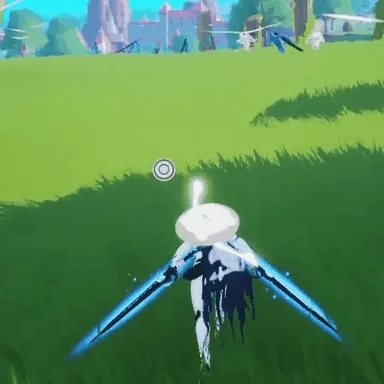
Skybound Odyssey
UE5C++BlueprintActionRPGFantasy
The world of Arathia was a place of wonder and danger, filled with mythical creatures, ancient
ruins, and
powerful magic. And in this world, the player was a captain of their own airship, traveling the skies and the
seas to deliver goods and trade with various kingdoms and cities.
In the world of Arathia, airships, and artificial cities floated high above the skies. The player was the
captain of his airship, traveling the world and delivering goods to various kingdoms and cities across the
land.
The artificial cities required special fuel to maintain their high altitude and avoid the sea monsters that
lurked below. The player's main task was to deliver fuel packages to these cities. However, the player had
to be careful in arranging the packages on their airship to prevent it from becoming unbalanced and
crashing.
As they traveled from city to city, the player encountered all sorts of challenges and obstacles. They faced
rival airship captains who would stop at nothing to steal their goods, treacherous storms that threatened to
toss their airship about, and dangerous sea monsters lurking in the depths below.
But the player was always up to the challenge, utilizing their skill and experience to overcome every
obstacle in their path. They even tended to a small farm on their airship, growing crops and raising
livestock to sustain themselves on their long voyages.
However, one day, while traveling through a particularly treacherous storm, the player encountered a giant
sea monster. In the lightning during the big storm, the player's airship was destroyed by the monster, and
the player plummeted to the sea.
Fortunately, the player survived the fall into the water. Now, they must find a way to rebuild the airship,
retrieve lost items, and continue their journey to deliver goods to their customers in time.
After rebuilding the airship they leave the island and continue their journey. As they journeyed, the player
also encountered great cities that floated on the sea, home to seafaring adventurers and traders.
The player also encountered different types of sea monsters, each posing unique challenges that required new
strategies and tactics to defeat. Additionally, rival captains with their own stories and motivations were
encountered, and the player's interactions with them could result in alliances or enmity. The player also
encountered all sorts of dangers, from ferocious beasts to rival kingdoms who would stop at nothing to steal
their goods.
The artificial cities also had their own cultures and customs that provided a rich background for the player
to immerse themselves in. The player interacted with the inhabitants and learned more about their way of
life.
The small farm on the airship became an essential aspect of the game, and the player needed to manage it
carefully to ensure a steady supply of food and resources. The player could upgrade the farm to improve its
efficiency and production.
As the player continued their adventures, battling monsters, and rival captains, and tending to their farm,
they learned of a great threat to the world. The giant sea monsters were wreaking havoc on the seas,
destroying ships, and causing chaos wherever they went.
The small farm on the airship could have a more significant role in the game, with the player needing to
manage it carefully to ensure a steady supply of food and resources. The player could also upgrade the farm
to improve its efficiency and production.
The player vowed to continue adventuring with his trusty airship, ready to face any challenge that came
their way. They emerged as a legend among airship and sea captains, respected and admired for their skill,
bravery, and determination.
The player continued their adventures, delivering goods to both air and sea cities, battling monsters and
rival captains, and tending to their farm all along the way. And as they journeyed, they knew that there
would always be new dangers lurking in the skies and the seas, but they were ready to face them all, with
their trusty airship and their unwavering spirit of adventure.
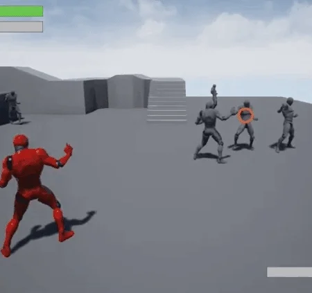
Street Clash
UE5C++BlueprintMultiplayerActionFighting
This is the ultimate street fighting game where players will engage in chaotic and intense
battles to determine who is the toughest fighter on the block. Get ready to experience the raw energy and
adrenaline of street fighting as you brawl your way through the toughest neighborhoods and take on the
toughest opponents.
With a diverse cast of characters, each with their unique street fighting style and signature moves, Chaos
Street delivers a visceral and immersive experience that captures the excitement and danger of street
fighting. From back-alley brawls to underground fighting tournaments, Chaos Street offers a variety of
gameplay modes and environments that will put your skills to the test.
Choose your fighter and prepare to face off against a wide range of opponents, from street thugs to skilled
martial artists, each with their unique strengths and weaknesses. Use your fighting skills to dodge attacks,
execute devastating combos, and unleash your signature moves to knock your opponents to the ground.
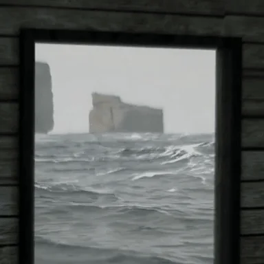
Thalassophobia
UE5BlueprintReseach
Thalassophobia is a research game on Unreal Engine 5 that explores the fear of the unknown
depths of the
ocean. The game creates an immersive experience, where players face their fear of the unknown in a hauntingly
beautiful underwater environment. Through this project, we hope to contribute to the understanding of this
phobia and its treatment.
MultiplayerSystem
UE5C++Plugin
The Plugin is a versatile library that can be used in many multiplayer games on Unreal Engine
5.
This plugin simplifies the development process by providing a range of features, such as matchmaking, and
real-time synchronization. The Plugin can save developers a significant amount of time and effort when
creating multiplayer games on Unreal Engine 5.
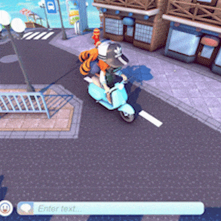
My Meta Farm
UnityC#MetaverseBuildingFarmingGameFiMultiplayer
My Meta Farm is a metaverse integrated with a huge open world and social games hub powered by
blockchain.
Windy Kingdom
UnityC#SurvivalFarmingDefenseSinglePlayer
Windy Kingdom is a Sandbox game project, the simulation farm combined with defense is inspired
by "Harvest
Moon" and "Plant vs Zombie". In the gameplay of Windykingdom in the top-down perspective, the Player will play
a character from the future who is trying to survive in a kingdom full of women and monsters.
Root Of Evil: The Tailor
UnityC#HorrorSinglePlayer
This is a horror and puzzle game the story is about a case happened 20 years ago! You will
play a telepath
named James.
He was hired to explore what happened in the previous 20 years in this house. Gameplay uses the first person
perspective, your mission searching for items and
solve puzzles in order to connect with the souls of those who died in the house and listen to them recount
their past.
The Design Pattern project provides hands-on experience in implementing software design
patterns in C++, C#, JS, and Python. It aims to enhance engineers' software design skills and promote
proficiency in cross-language programming. The project covers various design patterns and explores the
strengths and limitations of each language.
The Data Structures project aims to explore and implement various data structures in C++, C#,
JS, and Python.
The project seeks to enhance understanding of data structures, improve programming skills, and promote
cross-language proficiency. Participants will gain valuable experience in programming, algorithm design, and
testing, while comparing and contrasting the performance and efficiency of each data structure in each
language. The project also aims to contribute to the development of best practices and standards for data
structure implementation across multiple languages.
The Algorithms project aims to explore and implement popular algorithms in C++, C#, JS, and
Python. The
project seeks to enhance understanding of algorithms, improve programming skills, and promote cross-language
proficiency. Participants will gain valuable experience in programming, algorithm design, and testing, while
developing a deeper understanding of each language's advantages and limitations. The project also aims to
contribute to the development of best practices and standards for algorithm implementation across multiple
languages.
This is a simple dice roll game developed using JavaScript, Player chooses as 'Player 1'or
'Player 2' and
selects 'Play'. Dice will be rolled randomly and the system will announce who wins after each roll.
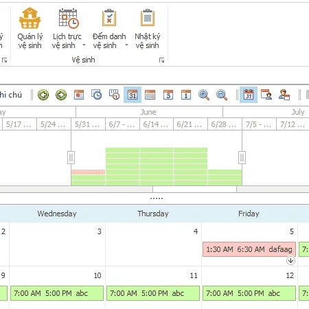
Apartment Manager
SoftwareC#
The Apartment Manager software, written in C# and using DevExpress UI components, streamlines
the management
of apartment complexes. With its user-friendly interface, the software simplifies tenant information
management, lease agreements, rent payments, maintenance requests, and more. It is a fast, reliable, and
scalable solution for property managers.
Features include:
- Manage personal information
- Management of sales, installment and rental contracts
- Management of electricity and water
- Manage invoices: print, issue invoices
- Manage security attendance.
- And so many other features.
The computer temperature measurement application for Windows, developed using C# and WPF,
monitors and
displays the temperature of computer components such as CPU, GPU, and hard drives. With its beautiful and
customizable interface, the application provides users with real-time temperature information to optimize
system performance and prevent overheating.
Self-developed repository, containing tools written in Python, convenient for personal use or
use as add-ons in projects using Python. Contain the tool used to calculate the total length of all videos in
one(or many) folder(s).
This is a self-developed repository containing tools written in JavaScript, HTML, CSS,
Docker,... which is handy when making add-ons in websites, or projects using JavaScript, HTML, CSS. The goal
is to help dev quickly refer back to old knowledge.
Get In Touch
If you need any information, don't hesitate to contact me.